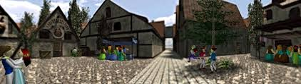

Mi lugar favorito de cada juego de Zelda que he jugado
The Legend of Zelda tiene unos lugares muy variados y preciosos. Por eso, te presento mis lugares favoritos que, al menos a mí, me encantaría visitar:
Link's Awakening
Aldea Mabe
Si, no es que me gustaría visitar del sitio porque sabemos lo que eso significa, ¿no? Pero quitando eso, es una aldea muy bonita con habitantes muy simpáticos, y principalmente es el hogar de nuestra querida Marin.
Ocarina of Time
Ciudadela de Hyrule
Es un ambiente muy alegre y bonito, en cada lugar hay algo interesante, cada personaje es especial, y en general es un ambiente que me encantaría conocer.
Majora's Mask
Gran Bahia
Hogar de la raza Zora, es una playa hermosa que a cualquiera le daría ganas de echarse a nadar, ¡cierto?
Wind Waker
Isla Initia
El hogar de Link junto a su hermanita y su abuela. Es una isla ubicada en el Gran Mar con habitantes muy variados y un mirador en el que se puede apreciar el vasto mar.
Minish Cap
Sobre las nubes
Ya sé que estás pensando "¿Sobre las nubes? ¿Es eso posible?" Y sí que lo es. ¡Solo imagínate estar caminando sobre las nubes o vivir en ellas, qué genial!
Twilight Princess
Lago Hylia
Así es, me gusta el agua, pero es que el Lago Hylia es simplemente hermoso, con una música relajante, el santuario del lago al fondo y el dominio de los Zora hasta arriba. Es un lugar ideal.
Phantom Hourglass
Isla De Ese
Debo admitir que este juego no es de mis favoritos, pero literalmente es una isla con forma de Nintendo DS, ¡vaya referencia increíble!
Spirit Tracks
Torre de los Dioses
No es que pretenda pasar esa mazmorra llena de espectros, si eso estás pensando, lo que digo es que me conformaría con quedarme en la planta baja y observar la inmensidad de la torre desde arriba. Debe tener una vista increíble.
A Link Between Worlds
Lorule
Entiendo lo peligroso que es el mundo alterno de Lorule, pero vamos, ¡pasar de una dimensión a otra mediante unas grietas! Sería de locos.
Breath of the Wild:
¿De verdad creíste que me conformaría con un solo lugar en este grandioso juego? ¡Por favor! Si el mapa es de lo más inmenso, dan ganas de conocer hasta el último rincón del mapa, simplemente una genialidad.
Tears of the Kingdom
Islas del Cielo
Lo mismo pasa con TOTK, si el mapa de BOTW es inmenso, el de su secuela es simplemente GIGANTESCO. Agrega eso que también podemos explorar desde el cielo hasta lo profundo del subsuelo. ¡Solo imagínate estar en una isla en el cielo a kilómetros de la tierra para después lanzarse en picado y caer en el agua! ¡Glorioso! (PD: No elegí el subsuelo porque sencillamente me da algo de miedo, pero encontrarte allí, aparte de villanos tenebrosos, y poder enfrentarte a los jefes del templo siempre que quieras, es algo que hace que merezca la pena explorar).